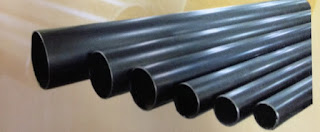
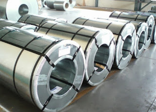

Jual Floor Deck Harga Murah di Banjar ☎ ??? (www.dis.or.id)
Pernahkah anda melihat bangunan tanpa atap? Tentu pernah bukan? Bangunan tanpa atap hanyalah bangunan yang terbengkalai dan tidak diurus oleh pemiliknya. Dikarenakan banyak keunggulan yang mengalahkan kayu sebagai rangka konvensional. Keberadaannya tidak kalah penting, dikarenakan fungsinya adalah menyangga. Apa yang terjadi? Tentu anda tahu, atap tersebut tidak akan bertahan lama dan bahkan bisa langsung roboh karena tidak adanya pondasi yang menyangganya.
Distributor & Supplier Floor Deck (Bondex)

Jika dibandingkan dengan triplek maupun bahan lain yang digunakan untuk membuat sebuah dek, ada beberapa kelebihan Floor Deck yang tidak dimiliki oleh beberapa bahan lain tersebut. Jika memilih menggunakan Floor Deck ini bisa langsung berfungsi juga sebagai bekisting permanen dan siap di cor dalam waktu singkat. Produk material ini berfungsi untuk menggantikan fungsi bekisting pada saat melakukan pengecoran plat pada lantai. Selain itu, Floor Deck ini bisa dipasang pada konstruksi baja ataupun beton serta didukung dengan data perencanaan.
Kini anda bisa mendapatkan floor deck Banjar berkualitas dan bermutu tinggi dengan hanya mengunjungi situs dis.or.id. Disana anda bisa mendapatkan floor deck Banjar yang anda inginkan. Pastinya dengan harga yang sangat terjangkau dan dengan mutu terbaik.
Info Pemesanan Selengkapnya
Google Maps: https://www.google.com/maps/d/u/0/viewer?mid=1vSGA7eD7ctB-ierGsro9yf6LdDAQHeLS&ll=-6.2537250295094555%2C106.82745&z=15
Note: https://www.facebook.com/notes/distributor-of-industrial-supply/kontraktor-jasa-floor-hardener/1783168878649658/
Event: https://www.facebook.com/events/534395173592364/
Portfolio Produk: https://www.facebook.com/1681607345472479/photos/?tab=album&album_id=1685055588460988
Distributor & Supplier Besi Beton

Karena perkembangan suatu proses pembangunan maka hasil bola material yang dapat mendukung pembangunan tersebut agar terlihat lebih kokoh dan juga awet. Ada beberapa jenis material konstruksi yang ditawarkan, seperti besi beton dengan kualitas yang terbaik. Berbagai macam tipe tersebut bisa Anda gunakan untuk pembangunan. Maka dari itu anda harus selektif untuk menentukan besi beton mana yang sesuai dengan yang anda inginkan.
Besi beton polos sangat jarang digunakan kecuali digunakan sebagai kolom.
Segera kunjungi dis.or.id untuk mendapatkan besi beton yang anda inginkan. Anda bisa langsung mengunjungi dis.or.id. Karena, disan anda bisa mendapatkan besi beton yang anda inginkan yang pastinya sesuai dengan yang anda ekpetasikan. Jadi, anda tidak perlu ragu lagi.
Distributor & Supplier Steel Grating

Steel Grating kini dikenal sebagai salah satu produk yang bermanfaat untuk proses pembangunan. Salah satunya dengan menggunakan grating dalam kombinasi pembangunan. Secara umum, produk ini digunakan dalam kontruksi lantai, kemudian deck, anak tangga pada bangunan pabrik kemudian, tambang minyak dan sejumlah bangunan industri lain nya. Grating ini disusun dari baja berkalit dan dilas di bagian permukaan silangnya. Tentunya dengan berbagai model dan tipe yang beragam. Bahan yang berkualitas ini memudahkan para konsumen dalam melakukan pembangunan dengan memperoleh hasil maksimal. Pada umumnya, Grating hanya memiliki 2 type, yaitu serrated atau bergerigi dan plain atau polos.
Maka dari itu, jika anda membutuhkan steel grating untuk keperluan pembangunan, anda bisa langsung saja mengunjungi dis.or.id. Karena disana anda bisa mendapatkan steel grating yang berkualitas dan harga yang ditawarkan pun sangat terjangkau dan pastinya cocok untuk kantong anda.
Distributor & Supplier Pipa (Hitam/Gas, Galvanis)

Pipa hitam gas galvanis memiliki kekuatan yang tidak dapat diragukan, bagian luar pipa juga telah terlapis stainless steel sehingga menjadikannya tahan korosi. Pipa hitam galvanis telah di produksi khusus untuk kebutuhan pertambangan minyak dan gas, maka tak heran bila banyak orang yang menyebut pipa hitam adalah pipa gas. Sifatnya yang tahan karat menjadikan pipa ini dapat diaplikasikan disegala perubahan cuaca Indonesia. Tentukan kebutuhan pipa hitam anda pada kami, tersedia ukuran ½ inc sampai 40 inc.
Distributor & Supplier Kawat Bronjong/Gabion

Kawat bronjong berfungsi sebagai pencegah erosi. Hal ini disebabkan kawat ini dilapisi dengan galvanis. Bentuknya sama seperti kawat pada umumnya. Kawat ini sangat bisa diandalkan sebagai pencegah erosi. Kawat ini terbuat dari baja. Anda bisa lihat tumpukan bebatuan di pinggir pantai yang dirantai dengan kawat bronjong.
Jika anda sedang mencari kawat bronjong, anda bisa datang dan mengunjungi situs dis.or.id. Jika anda tengah membutuhkna kawat ini, anda bisa saja langsung mengunjungi dis.or.id. Tak hanya itu, kawat bronjong yang disediakn juga terdapat bermacam ukuran.
Distributor & Supplier WF H-beam

Besi WF kini banyak dikenal sebagai salah satu jenis profil baja Struktural yang berkualitas. Terlebih saat ini zaman sudah serta praktis dan mudah. selain itu, besi ini ternyata memiliki kualitas yang terjamin sehingga tidak diragukan lagi. Besi WF memiliki daya tahan terhadap suatu bangunan.
Jika membawanya Anda juga tidak perlu khawatir keberatan karena besi ini lebih ringan dan praktis. Pembawaan bebannya pun juga sangat mudah dan terjamin.
Segera kunjungi situs tersebut dan dapatkan penawaran menarik.
Distributor & Supplier Expanded Metal

Expanded metal atau yang biasa dikenal dengan sebutan X.P.M. ini merupakan salah satu produk hasil dari kemajuan teknologi saat ini. Expanded Metal memiliki corak yang sangat unik dengan berbagai bentuk berbeda. Selain itu, Expanded Metal ini juga memiliki banyak jenis. Selain itu, Expended Metal juga dikenal mampu menahan beban berat, memiliki permukaan yang anti slip/tidak licin, dan juga dikenal tahan karat untuk material yang dari alumunium.
Kini anda bisa mendapatkan expanded metal dengan kualitas dan mutu yang telah terjamin di dis.or.id. Terdapat berbagai ukuran dari expanded metal yang bisa anda pilih dan anda pesan sekarang juga.
Distributor & Supplier Plat (Hitam, Kapal, Bordes, Strip)
.JPG)
Apabila anda saat ini sedang mencari tempat atau toko yang jual plat hitam , anda dapat menemukannya di toko besi terdekat. Namun yang terpenting pastikan anda membeli plat besi SNI. Karena dis.or.id adalah distributor pertama yang langsung mengambil barang dari pabrik. Plat besi memang ada yang tipis dan tebal, perihal ukuran ini akan kita sampaikan secara detail pada topik yang berbeda.
Distributor & Supplier Atap Galvalum

Saat ini bangunan modern minimalis dan properti sudah sering dijumpai menggunakan atap galvalum.
Banyak sekali kelebihan yang dimiliki oleh atap galvalum ini. Galvalum atau biasa disebut baja ringan, terbukti mempunyai banyak kelebihan jika dibandingan dengan kayu. Galvalum mempunyai berbagai ukuran yang sesuai dengan kebutuhan.
Ada anggapan bahwa atap galvalum membuat suasana menjadi panas dan bersik. Galvalum mampu menahan panas hingga memantaulkan sinar UV. Tapi kayu rentan dimakan oleh rayap.
Distributor & Supplier Atap Lengkung

Baik atap tersebut terbuat dari besi, aluminium, galvalum, zincalum kayu dsb. Atap haruslah mempunyai sifat kedap air sehingga air hujan tidak akan merembes kedalam bangunan tersebut.
Atap lengkung terbuat dari bahan galvalum dan zincalum yang sudah terkomposisi dengan sempuran. Salah satu jenisnya adalah atap lengkung. Salah satunya juga harus kuat menahan derasnya air hujan.
Anda pastilah pernah melihat bahwa atap di salah satu stadion itu berbentuk lengkungan. Atap galvalum yang satu ini mempunyai bentuk yang sangat unik. Yaitu, lengkungannya yang sangat tidak biasa jika dibandingkan dengan atap galvalum yang lain. Bila anda mencari atap galvalum dengan lengkungan yang unik tersebut. Kami menyediakan atap lengkung sesuai dengan keinginan anda.
Distributor & Supplier Truss Canal C

Sebagai informasi untuk anda, bahwa besi kanal C ini di kalangan para pekerja bangunan juga kenal dengan nama Besi CNP. Jadi ketika anda mendengan istilah CNP, diharapkan anda tidak bingung atau merasa rancu lagi, karena pada dasar nya sama. Dengan penggabungan galvalum dengan besi kanal c maka sebuah bangunan bisa menjadi lebih kuat dan berkualitas. Sehingga gabungan keduanya menghasilkan kualitas yang bila ditandingkan dengan bahan gabungan lain maka tidak akan kalah berkualitasnya. Jadi fungsi nya sebagai reng atau penyangga genteng. Maka janganlah ragu dengan pilihan anda. Silakan kunjungi web dis.or.id untuk info lebih lanjut mengenai kebutuhan anda.
Distributor & Supplier Hollow Galvalum

Hollow galvalum adalah galvalum yang berfungsi sebagai rangka atap sebuah bangunan.
Karena hollow galvalum ini dapat ditemukan di toko bangunan khusus yang keberadaannya juga sudah menjamur. Dengan berbagai keunggulan tersebut hollow galvalum mampu menggeser keberadaan kayu sebagai rangka atap bangunan. Sehingga tidak heran bila hollow galvalum menjadi produk paling dicari oleh masyarakat dalam industri pembangunan. Studi penelitian telah mengungkapkan bahwa kerangkan plafon menggunakan jenis hollow ini bisa bertahan puluhan tahun.
Distributor & Supplier Seng Gelombang

Seiring perkembangan jaman, seng gelombang mengalami peningkatan dari waktu ke waktu. Ia lebih mudah di pasang dan harga jual yang ekonomis dipasaran membuat seng gelombang memiliki banyak peminat. Seng gelombang adalah salah satu solusi yang kami rekomendasikan untuk anda. Atap menjadi bagian penting sebuah bangunan yang harus diperhatikan. Ia lebih mudah di pasang dan harga jual yang ekonomis dipasaran membuat seng gelombang memiliki banyak peminat.
Bila anda sedang mencari seng gelombang dengan keunggulan dan kualitasnya.
Distributor & Supplier Plat Seng

Plat seng dan plat galvalum banyak digunakan untuk berbagai kebutuhan, dari kebutuhan pembangunan rumah, industri, pabrik dan berbagai kegunaan lainnya. Anda dapat memilih lebaran atau per meter sesuai dengan fungsinya.
Plat galvanis ukuran 3mm memang dikategorikan ke ukuran paling tebal, sedangkan 1mm dapat dikatakan adalah titik tengah dari ketebalan plat. Jika anda penasaran dengan harga plat galvanis ini, silahkan hubungi customer service kami untuk menanyakannya. Hal hal tersebut memang menjadi ciri khas dari seng biasa pada umumnya. Namun apabila anda berencana membangun sebuah atap dari awal, sebaik nya anda membeli plat galvanis lembaran, karena kebutuhan anda banyak dan juga luas, sehingga yang lembaran ini akan lebih efektif untuk anda.
Disana banyak sekali info yang sangat berguna untuk anda yang sedang mencari plat seng & plat galvalum sesuai kebutuhan anda. Lalu berapa harga plat galvanis 2018? Bila anda sedang mencari harga terbaru hari ini juga, anda dapat menghubungi kami karena kami menjual plat galvanis, galvalum dengan berbagai ketebalan dan ukuran.
Distributor & Supplier Genteng Metal

Kami akan mengulas seputar tentang genteng metal pasir terbaik. Berbicara tentang genteng metal memang akan identik dengan perbandingan metal vs keramik. Salah satu dari kelebihan genteng metal adalah lebih membuat rumah anda bersih, rapi, lebih anti bocor, dan juga lebih ringan. Anda cukup menghubungi contact person yang sudah tertera di setiap industri yang anda butuhkan. Apakah anda sedang mencari genteng metal berkualitas? Maka anda berada di tempat yang tepat, silakan kunjungi dis.or.id dan dapatkan info menarik khusus untuk anda yang ingin segera mengetahui keunggulan genteng metal ini.
Distributor & Supplier Besi Wiremesh

Wiremesh merupakan besi lonjor panjang yang disusun seperti anyaman sehingga membentuk lembaran. Dengan struktur besi yang seperti itu, tidak heran bila banyak orang menilai besi wiremesh adalah besi anyam. Dengan memiliki bentuk yang mirip seperti besi anyam, pemanfaatan besi ini sangat banyak terutama dalam dunia konstruksi, salah satunya adalah sebagai plat lantai dan dak beton. Sementara ketebalan 4 – 6 dimanfaatkan untuk bangunan biasa. Besi wiremesh dengan kualitas bagus biasanya akan diproses dengan sistem las otomatis, sehingga susunan kawatnya rapi dan jaraknya teratur. Jika anda saat ini membutuhkan besi wiremesh dengan kualitas terbaik, segera kunjungi dis.or.id.
Distributor & Supplier Pagar BRC

Pagar BRC dibuat dari besi beton berukuran diameter 5 mm – 8 mm sehingga tergolong kuat sebagai pagar pengaman. Potongan besi berdiameter tertentu tersebut dig abungkan dengan bantuan mesin las wiremesh. Pemanfaatan pagar BRC sendiri tergolong sebagai pagar minimalis yang siap digunakan untuk melindungi sebuah bangunan. Apalagi mengingat kekuatan pagar BRC tidak dapat diragukan lagi, karena pagar ini diproduksi dengan baja bertegangan tinggi U55 grade dengan tegangan ijin 2900kg/cm2 sekitar 2. Apalagi pagar BRC telah terlapisi dengan galvanis yang membuatnya tahan karat dan bertahan hingga 10 tahun ke atas, anda bisa aplikasikan pagar BRC ini di daerah korosif sekalipun. Disini kami siap menerima pesanan pembuatan pagar BRC untuk anda yang membutuhkan.
Distributor & Supplier Kawat Loket, Kawat Harmonika

Adalagi jenis kawat yang cocok diaplikasikan sebagai penyekat maupun kawat pagar, yakni kawat loket harmonika ini. Tak hanya sampai disitu, kebutuhan akan kawat loket harmonika mencakup berbagai bidang industri, baik keperluan rumahan sampai industri. Untuk kehidupan sehari-hari kawat harmonika banyak digunakan untuk keperluan rumahan, konstruksi, dan industri. Apalagi bila jenis kawat harmonika yang digunakan adalah galvanis yang terkenal tahan karat maupun korosi sehingga sangat awet. Kawat loket harmonika yang kami tawarkan berkualitas mutu tinggi sehingga cocok untuk berbagai keperluan, segera hubungi kami untuk informasi pemesanan! Kami dapat menerima segala kebutuhan kawat harmonika anda dengan maksimal ukuran lebar sampai 3 meter.
Distributor & Supplier CNP & UNP

Besi UNP / besi kanal merupakan besi yang memiliki bentuk lengkung seperti huruf U yang banyak diaplikasikan untuk sambungan maupun dudukan atap. Selain itu, besi ini banyak dimanfaatkan untuk keperluan girts atau penutup dinding. Apabila anda amati sekali lagi, sebenarnya pemanfaatan dari besi UNP hampir mirip dengan WF, tapi karena besi UNP memiliki bentuk yang melengkung masih jarang orang yang memanfaatkan material ini untuk keperluan kolom bangunan. Sedangkan untuk besi CNP sendiri lebih banyak digunakan pada dinding cladding atau gording. Besi CNP memiliki bentuk yang hampir mirip dengan huruf C sehingga ia sering disebut sebagai profil C / balok purlin. Besi CNP sangat fleksibel dalam pengaplikasiannya karena ia dapat dimodifikasi dari plat koil dengan teknik cutting sehingga membentuk huruf C. Pemanfaatannya bahkan bisa untuk keperluan otomotif.
Distributor & Supplier Besi Siku

Kedua sisi pada besi siku berbentuk tegak lurus dengan sudut yang berbeda, ada besi siku sama sisi, dlsb. Ukuran panjang dari besi siku yang kami sediakan adalah panjang 6 meter, dan ketebalan yang bisa anda sesuaikan dengan kebutuhan. Anda dapat mengunjungi situs resmi kami untuk info pemesanan besi siku selengkapnya! Telah tersedia besi siku dengan berbagai ukuran yang bisa anda pesan. Anda dapat manfaatkan produk besi siku dari perusahaan kami untuk keperluan industi, otomotif, bangunan, furnitur, konstruksi dan sebagainya.
Distributor & Supplier Hollow (Hitam, Galvanil, Galvanis)

Sekarang ini besi hollow pemanfaatannya sudah melebihi kayu, meskipun terbuat dari besi kualitasnya pun tidak dapat diragukan lagi.Sekarang sudah banyak orang yang beralih pemanfaatan dari kayu menjadi menggunakan besi hollow.Banyak orang yang mulai beralih dari pemanfaatannya yang menggunakan kayu beralih pada hollow hitam galvanil.Besi hollow saat ini menjadi material pengganti kayu yang sangat baik. Dengan menggunakan material ini pembangunan konstruksi juga bisa selesai lebih cepat sehingga meminimalkan upah pekerja. Besi hollow bisa dimanfaatkan untuk berbagai keperluan, misalnya seperti pagar, pintu besi, teralis, dan masih banyak lagi. Jika anda membutuhkan besi hollow maka sebelum memesan pada kami anda harus melakukan perhitungan kebutuhan dahulu, seperti berapa panjang dan ketebalan yang diperlukan. Untuk itu hubungi kontak kami segera!
Distributor & Supplier Pipa Pancang

Untuk yang di bahas pertama adalah pipa pancang. Apalagi bagi Anda yang sering menangani proyek di permukaan laut, pipa pancang ini memang memiliki fungsi yang sangat penting. Terutama bagi Anda yang sedang membangun proyek di atas permukaan laut, tentu saja ini akan sangat membantu. Sedangkan dari segi spesifikasi, pipa pancang tersedia dalam berbagai ukuran. sedangkan dari segi spesifikasi maupun ukuran, pipa pancang cukup variatif dan bisa di sesuaikan dengan kebutuhan. apalagi jika yang di katakan adalah di industri DIS ini.
Jasa Pondasi Bor (Strouss/Borepile)

Ketika melakukan proyek pembangunan rumah sendiri, kualitas yang baik hingga dalam hal pengeboran pondasi pun akan menjadi hal yang di harapkan. terkait dengan hal itu, Anda bisa menggunakan jasa pondasi bor sebagai jalan keluar sehingga pada proyek akan menghasilkan pengeboran yang sempurna. Sedangkan di mana Anda bisa mendapatkannya, jangan khawatir karena di sini Anda pun bisa memesan jasa tersebut. Sedangkan untuk kualitas hasil pengeboran nya pun tidak perlu di pertanyakan karena bisa di jamin sempurna dan sangat tinggi. Namun perlu di ketahui pula bahwasanya selama proses akan memunculkan suara bising sekalipun tanpa getaran. Jika mengenal pengeboran lebih jauh, sebenarnya ada dua jenis yakni manual dan otomatis dengan penggunaan mesin. Yakni pengeboran manual atau yang otomatis dengan menggunakan mesin. Untuk masalah kualitas hasilnya pun sama saja jadi tidak perlu khawatir. Mesin seperti ini pun telah banyak di temukan di pasaran.
Distributor & Supplier Genset (New/Second)

Dalam penggunaannya, genset ini menggunakan bahan bakar berupa solar. Sedagkan keduanya, bisa Anda temukan di DIS.
Dalam masalah harga, tentu saja memang genset di jual dengan cukup mahal. Oleh karena itu tidak sedikit yang memilih membeli genset bekas. Namun, dari segi kualitasnya jangan khawtair karena masih banyak genset bekas yang kondisinya hampir seperti genset baru. Kini ditributornya pun telah tersear di mana-mana sehingga lebih mudah.
Distributor & Supplier UPS

Lain dari produk sebelumnya, untuk UPS mungkin belum cukup di kenal kecuali di dunia elektronik. Hanya saja, yang tidak mengetahui nya pu juga cukup banyak. Sedangkan UPS sendiri merupakan sebuah alat elektronik yang mampu akan menjadi sumber listrik pengganti sementara jika sumber utamanya terputus. Terutama bagi yang sering menggunakan komputer. Sedangkan dari jenisnya, UPS cukup variatif. Baik dari segi kualitas maupun kapasitas yang di milikinya. Terkait akan penjualan pun, di sini DIS menyediakan UPS juga dengan kualitas yang sangat memadai bagi Anda.
Distributor & Supplier Forklift (Second)

Dalam setiap industri, baik itu industri kecil, menengah, hingga yang besar, tentu saja akan banyak yang menggunakan forklif. baik itu untuk industri yang kecil maupun besar. Jika tidak ingin yang baru pun Anda bisa memilih forklif yang di jual bekas. sedangkan dari sisi kualitas barang yang di tawarkan di sini, jangan khawatir karena tentu saja akan sangat memuaskan. Dengan jaminan kualitas yang memadai ini, bisa di pastikan segala aktifitas industri Anda akan berjalan lebih lancar lagi. Nah, mengingat kualitasnya yang terjamin, maka akan semakin memudahkan berbagi aktifitas industri pengguna nya. Yang lebih menarik lagi, forklif cukup menguntungkan karena jika sudah tidak di gunakan lagi Anda bisa menjualnya kepada beberapa distributor yang tersedia di berbagai tempat. Sedangkan yang lebih menguntungkan lagi darinya adalah, ketika Anda sudah tidak memerlukannya, maka bisa di jal kembali pada distributor forklif.
Jasa Pembuatan Moulding Inject

bahkan kalau berbicara kualitas hasilnya di sini, bisa di pastikan akan sangat bermutu. Di sini, Anda bisa mendapatkan moulding inject dengan kuantitas tanpa batas. Termasuk jika Anda sedang bingung akan ide, di sini pun ada beberapa pilihan yang bisa menjadi inspirasi. Anda pun bisa memilih kira-kira ide seperti apa yang paling pas untuk produk Anda sehingga pembuatannya bisa tepat sasaran.
Jasa Pembuatan Sparepart Mesin Produksi / Alat Berat

Di dunia mesin, tentu saja mendengan kata sparepart atau alat berat sudah tidak asing lagi. Bukan hanya dalam penggunaannya, akan tetapi juga pembuatannya. Oleh karena itu, silahkan menggunakan jasa terpercaya yang di sediakan di sini sehingga akan memiliki hasil yang terjamin. salah satunya seperti yang di tawarkan di DIS. Pembuatan alat berat ini memang tidak bisa sembarangan, bisa jadi ketikan di buat dengan sembarangan dan ada kesalahan yang cukup fatal, akan membahayakan bagi para pekerja. Hal inilah yang membuatnya harus di produksi oleh jasa terpercaya sehingga akan semakin aman. Perbedaan harga tersebut bisa berdasarkan pada jenisnya yang berbeda maupun ukurannya. oleh karena itu, di butuhkan hasil sempurna agar dalam penggunaannya bisa maksimal.
Jasa Service Elektronik (Kompor Gas, Dispenser, Mesin Cuci)

Dengan semakin berkembanganya zaman, penggunaan elektro juga semakin banyak. Jika Anda bingung di mana memperbaiki barang tersebut, bisa saja langsung merujuk pada salah satu jasa yang di tawarkan DIS. Selanjutnya, untuk masalah kualitas, tidak perlu di pertanyakan lagi karena DIS akan memberikan jasa yang memiliki perhitungan tingkat perbaikan dan keamanan yang tinggi. Sedangkan untuk service ini sebenarnya tidak hanya untuk barang-barang bermasalah saja melainkan juga untuk pegecekan barang elektronik Anda sehingga akan tetap aman dan lancar di gunakan. Hanya saja kebanyakan orang memang melakukan service elektronik saat ada keluhan yang di rasakan saja.
Atap memang tidak diragukan lagi manfaatnya, bisa bayangkan bukan bila ada bangunan tak beratap. Hanya bangunan yang terbengkalai yang tidak mempunyai atap. Memang, ada beberapa bangunan mewah yang sudah memakai beton sebagai atapnya. Karena rumah paling kecil sekalipun pasti mempunyai atap di atasnya. Terima kasih, semoga artikel tersebut bermanfaat. Jadi bila anda tertarik dalam mencari berbagai jenis atap dan bingung dalam memilih. Maka, dengan senang hati kami akan membantu anda. Kunjungi dis.or.id untuk mendapatkan bantuan, info dan penawaran terbaik khusus untuk anda.